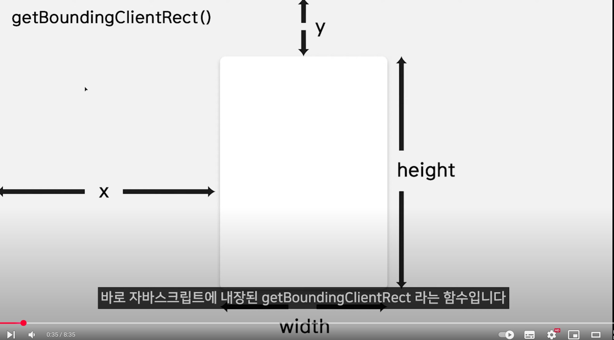
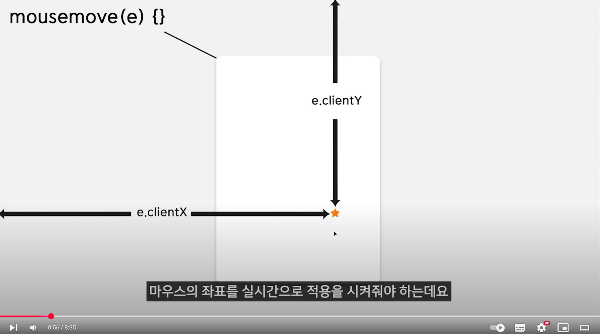
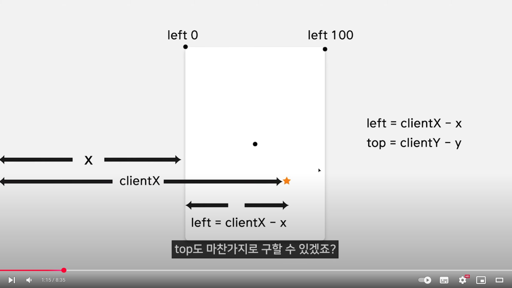
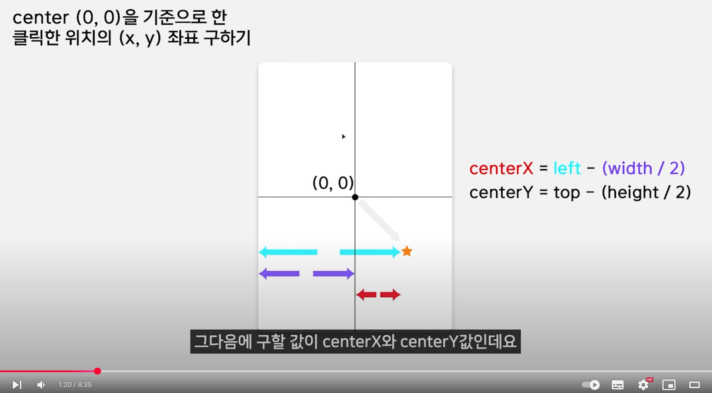
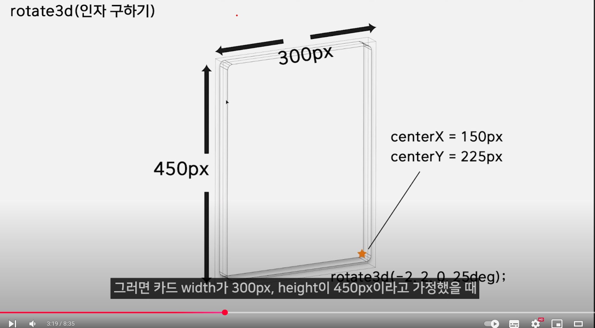
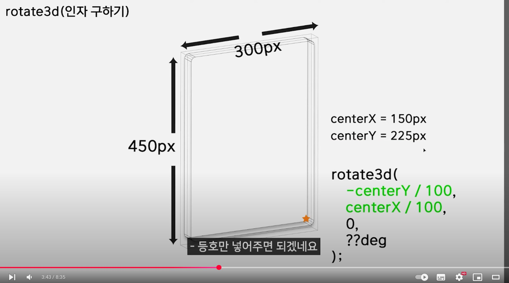
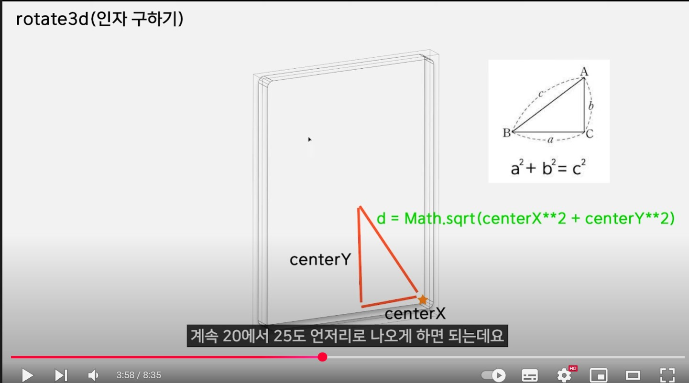
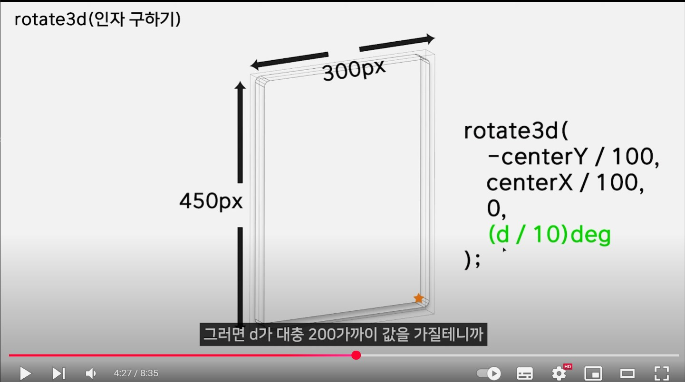
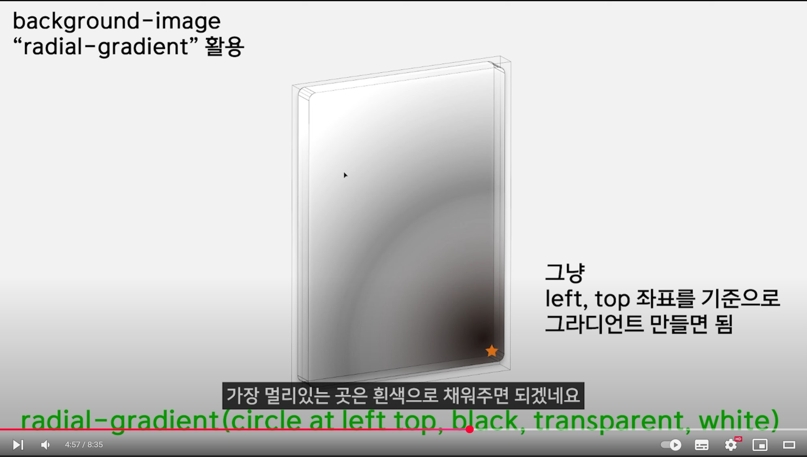
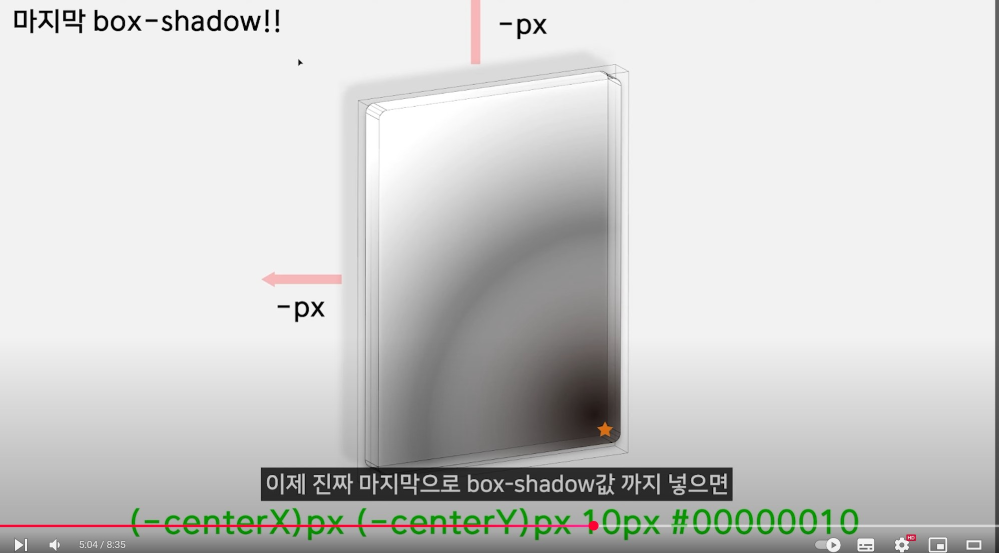

1. 마우스 좌표값을 구할 때 x y width height 먼저 구해둠
2. 현재 마우스 위치 구함
3. 구하고 싶은 곳의 상대값 찾음. clientX - x
4. 카드 센터에서 어느 위치에 왔는지 찾음
5. 트랜스폼 rotate3d 사용
transform: rotate3d(양수 위로 기울임. x축기준, 양수 오른쪽 기울임. y축기준, 오른쪽사선 기울임. z축기준, deg 각도)
오른쪽 아래로 기울이려면 ? (-2, 2, 0, 25deg)
6. 기울기 계산 (xy위치)
카드가 width: 300px, height:450px 이라고 가정 했을 때 우측가장하단은 센터로부터 150px, 255px 떨어져 있음
한자리 수로 나오게 하려면(rotate값) centerY,X / 100
왜냐하면 100단위기 때문에 한자리수로 나타내야함
7. 기울기 계산 (각도)
센터에서 가깝게 클릭했을 땐 조금 기울이고 멀리 클릭했을 땐 많이 기울게 하려면 피타고라스 정리를 이용하여 위치를 구함
중심을 기준으로 거리계산
centerX**2 + centerY**2 를 sqrt로 루트 씌워줌
나온 d는 200가까이 값을 가지니 /10으로 나눠줘서 20정도의 값으로 맞춤
8. 클릭한 위치의 선형 그라디언트
9. 그림자
